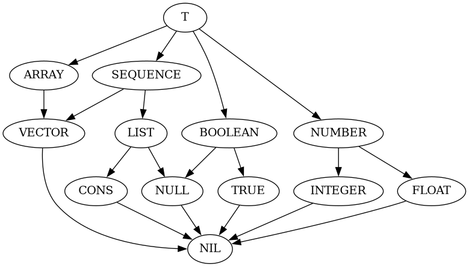

Type systems
Let \( T \) be a set of all possible values which may appear in our language
of expressions. For example, 1, "Hello world", '(1 2 3) all may
belong to \( T \). A type as type-inference-engine understands it is
a subset of \( T \). A type system \( I \) is a set of all types.
\( I \) is a partially ordered set: it is said that for \(t_1, t_2 \in
I \), \(t_1 \le t_2 \) if \( t_1 \subset t_2 \) and \( t_1 = t_2 \) if \( t_1
\subset t_2 \) and \( t_2 \subset t_1 \). \( I \) is also a lattice: for each
\( t_1, t_2 \in I \) there are unique meet \( t_1 \wedge t_2 \in I\) and join
\(t_1 \vee t_2 \in I \).
Join is defined as the smallest type such as \( t_1 \subset t_1 \vee t_2 \) and \( t_2 \subset t_1 \vee t_2 \) and meet is the biggest type such as \( t_1 \wedge t_2 \subset t_1 \) and \( t_1 \wedge t_2 \subset t_2 \). To form a lattice from a set of disjoint types, we include a type \( T \)(all possible values) and a type \( \emptyset \)(no values belong to this type) in our type system. So if \(t_1 \cap t_2 = \emptyset \), then \(t_1 \vee t_2 = T \) and \(t_1 \wedge t_2 = \emptyset \).
The type system \( I \) can be represented as a directed graph. For example,
in the example package type-inference-engine/example it is defined as
follows: 
Here a connection from ARRAY to VECTOR means that VECTOR ⊂
ARRAY. A description of types follows:
Tis a type \(T\) which contains all possible values in the program.ARRAYis a type for arrays of any dimensionality, e.g.#(1 2 3),#2a((1 2 3)(1 2 3)).SEQUENCEis a type for collections which can be indexed by a non-negative integer, e.g.#(1 2 3),'(1 2 3).VECTORis a type for one-dimensional arrays, e.g.#(1 2 3).LISTis a type for lists. List is either a cons cell or a valueNIL. Examples:NIL,'(1 2 3),'(1 2 . 3).BOOLEANis a type which contains two values:NILandT.NUMBERis a type for any number, possibly a complex number.CONSis a type for pairs of values, or cons cells, e.g.'(1 . 4).NULLcontains only one value:NIL.TRUEcontains only one value:T.INTEGERcontains integers.FLOATcontains floats (in any representation).NILis a bottom type \( \emptyset \).
NB: As a limitation of the engine, the bottom type must have a name
NIL. There is no other limitations in the type naming. For example, you
can name \( T \) as TOP instead of T. Here I just follow a convention
used in Common Lisp.
NB: You must keep in mind the difference between a value NIL and
a type NIL. The former is a value of types NULL, BOOLEAN,
LIST, SEQUENCE and T and the latter is a type which has no values
in it.
NB: This kind of type systems is very close to what we have in Common
Lisp with exception that there is no compond types and hence no set-theoretic
types like not, and and or.
Now let's define our own type system, which contains types NIL,
INTEGER, REAL and T and some wrapper functions for working with
that type system:
(defpackage tie-example
(:use #:cl)
(:local-nicknames (#:tie #:type-inference-engine)
(#:sera #:serapeum))
(:export #:*my-system*
#:type-node-order
#:join
#:meet))
(in-package :tie-example)
(defparameter *my-system*
(let* ((bottom (tie:type-node nil "The bottom type. No value belongs to this type"
;; No subtypes
nil))
(integer (tie:type-node 'integer "A type for integer numbers"
;; NIL is the only subtype
(list bottom)))
(real (tie:type-node 'real "A type for real numbers"
;; INTEGERs are real numbers. INTEGER is a direct
;; subtype of REAL
(list integer)))
(string (tie:type-node 'string "A type for strings"
(list bottom)))
(top (tie:type-node t "The top type"
;; Two direct subtypes
(list real string))))
(tie:check-type-system top)))
(defun type-op (function)
(lambda (type-name-1 type-name-2)
(funcall function *my-system*
(tie:find-type-node type-name-1 *my-system*)
(tie:find-type-node type-name-2 *my-system*))))
(sera:defalias type-node-order (type-op #'tie:type-node-order))
(sera:defalias join (type-op #'tie:join))
(sera:defalias meet (type-op #'tie:meet))
Now, you can evaluate some relations between types:
CL-USER> (tie-example:type-node-order nil 'real)
:LT
CL-USER> (tie-example:type-node-order 'integer 'real)
:LT
CL-USER> (tie-example:type-node-order 'integer 'string)
NIL
CL-USER> (tie-example:type-node-order 'string nil)
:GT
CL-USER> (tie-example:type-node-order nil nil)
:EQ
CL-USER> (tie-example:join 'integer 'real)
#<TYPE-INFERENCE-ENGINE:TYPE-NODE REAL {100DBB6283}>
CL-USER> (tie-example:meet 'integer 'real)
#<TYPE-INFERENCE-ENGINE:TYPE-NODE INTEGER {100DBB6263}>
CL-USER> (tie-example:join 'integer 'string)
#<TYPE-INFERENCE-ENGINE:TYPE-NODE T {100DBB62C3}>
CL-USER> (tie-example:meet 'integer 'string)
#<TYPE-INFERENCE-ENGINE:TYPE-NODE NIL {100DBB6243}>